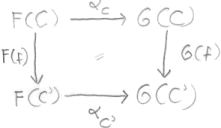
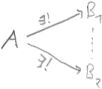

Contents
Categories and Functors
"general abstract nonsense", "functors leave complexes
complex"
- category
- A category C consists of a family Ob C
of objects, and for each A,B∈Ob
C a set MorC(A,B)
of morphisms between A and B
such that
| (r) |
∀A∈Ob C
∃idA∈MorC(A,A) |
"reflexive, identity" |
| (t) |
∀A,B,C∈Ob
C ∃∘:MorC(B,C)×MorC(A,B)→MorC(A,C)
with |
"transitive, composition" |
| (n) |
∀A,B∈Ob C
∀g∈MorC(A,B)
g∘idA = g |
"neutral" |
| ∀A,B∈Ob C
∀f∈MorC(B,A)
idA∘f = f |
| (a) |
∀A,B,C,D∈Ob
C ∀f∈MorC(A,B)∀g∈MorC(B,C)∀h∈MorC(C,D)
(h∘g)∘f = h∘(g∘f) |
"associative" |
We usually assume that MorC(A,B)
∩ MorC(C,D)
= ∅ unless A=C ∧
B=D.
Write: f:A→B for
f∈MorC(A,B)
☡ Beware: Unlike MorC(A,B),
Ob C does not need to be a set of objects,
but only a class of objects. Nevertheless we formally write ∈,⊆ etc.
- covariant
functor
- A covariant functor F:C→D
between two categories C and D
consists of a map F:Ob C→Ob
D and for each A,B∈Ob
C a map F:MorC(A,B)→MorD(F(A),F(B))
that satisfies the following conditions
| (1) |
∀A∈Ob C
F(idA) = idF(A) |
"unit" |
| (m) |
∀f∈MorC(A,B)∀g∈MorC(B,C)
F(g∘f) = F(g)
∘ F(f) |
"morph" |
☡ Beware: F:C→D
is not a map, since C,D
are no sets (they are categories) and even Ob C,Ob
D need not be sets.
- contra-
variant
functor
- A contravariant functor F:C→D
between two categories C and D
consists of a map F:Ob C→Ob
D and for each A,B∈Ob
C a map F:MorC(A,B)→MorD(F(B),F(A))
that satisfies the following conditions
| (1) |
∀A∈Ob C
F(idA)
= idF(A) |
"unit" |
| (m') |
∀f∈MorC(A,B)∀g∈MorC(B,C)
F(g∘f) = F(f)
∘ F(g) |
"contra-morph" |
A contravariant functor F:C→D
is a covariant functor F:C→D°
(or F:C°→D).
- natural
trans-
formation
- 
A natural transformation (or morphism of functors) α:F→G
between the functors F,G:C→D
is a family (αC∈MorD(F(C),G(C)))C∈Ob
C of morphisms such that
∀f∈MorC(C,C')
G(f)∘αC
= αC'∘F(f)
The functors C→D
form a category with natural transformations being the morphisms.
Remark: an isomorphism of functors is just a family of isomorphisms (αC∈IsoD(F(C),G(C)))C∈Ob
C with the above property (⇒
especially F(C)≅G(C)
∧ G(f) = αC'∘F(f)∘αC-1).
The elements of the monoid MorC(A,A)
are called endomorphisms of A. The elements of MorC(A,B)
that have an inverse in MorC(B,A)
are called isomorphisms. The elements of the group of isomorphisms in
MorC(A,A)
are called automorphisms.
| Let f∈MorC(A,A')
be a morphism. |
| monomorphism |
∀B∈Ob C mB(f)
injective |
"f is left cancelable" |
|
⇔ f injective |
(if C=Ens
) |
| epimorphism |
∀B∈Ob C mB(f)
injective |
"f is right cancelable" |
|
⇔ f surjective |
(if C=Ens
) |
- additive
- A category C is additive, if
| () |
∀A,B∈Ob C
HomC(A,B)
:= MorC(A,B)
is an Abelian(!)
group |
|
| (d) |
∘ is distributive over +, i.e.
- ∀A,B,C∈Ob C ∀f∈HomC(B,C)
∀g,h∈HomC(A,B) f∘(g+h)
= (f∘g) + (f∘h)
- ∀A,B,C∈Ob C ∀f,g∈HomC(B,C)
∀h∈HomC(A,B) (f+g)∘h
= (f∘h) + (g∘h)
|
"distributive" |
- additive
- A functor F:C→D
between two additive categories C and D
is additive, if
∀A,B∈Ob C
F:HomC(A,B)→HomD(F(A),F(B))
homomorphism of groups
⇒ ∀G≅F G
is additive
Important Examples
-
For every category C, there is the opposite
(dual) category C° obtained by "turning
the arrows around", per Ob C° := Ob C,
and MorC°(A,B) := MorC(B,A)
whereas the identity morphisms are the same, and the composition is f∘C°g
:= g∘Cf.
Duality Principle: Any theorem holding for a category C
also holds (in C°) with all
arrows reversed.
-
Categories together with functors form a category.
-
Additive categories form a category together with additive functors.
-
Functors of a fixed category together with their natural transformations
form a category.
-
Let C be a category. For each X∈Ob C
there are two functors
- covariant hom-functor
| mX:=MorC(X,·): |
C |
→ |
Ens |
| Y |
↦ |
Y∗:=MorC(X,Y) |
| (f∈MorC(Y,Z)) |
↦ |
(MorC(X,Y)→MorC(X,Z);
g↦f∘g) |
- contravariant hom-functor
| mX:=MorC(·,X): |
C |
→ |
Ens |
| Y |
↦ |
Y∗:=MorC(Y,X) |
| (f∈MorC(Y,Z)) |
↦ |
(MorC(Z,X)→MorC(Y,X);
g↦g∘f) |
They result from currying ∘. The properties of being a functor
coincides with the properties of morphisms (n) and (a), here. mX
is the opposite of mX. If C
is additive we write HomC(X,·):=hX:=mX,
and HomC(·,X):=hX:=mX
for these functors in C→Ab,
which are additive, then. The properties of being additive coincides with
(d).
Additional definitions....
- Yoneda-Lemma
- Let F be the category of functors C→Ens
⇒ ∀A,B∈Ob C the following map is
bijective
| α: |
MorC(A,B) |
→̃ |
MorF(mB,mA) |
| τB(idB) |
↤ |
τ |
| φ |
↦ |
| αφ: |
mB
| → |
mA |
| (αφ)C: |
MorC(B,C)
| → |
MorC(A,C) |
| f |
↦ |
f∘φ |
|
If C is additive and F
the category of (additive?) functors C→Ab,
then α is an isomorphism of groups.
- adjoint
- F:C→C'
left-adjoint to G:C'→C
(and G right-adjoint to F)
:⇔
mF
:= MorC'(F(·),·)
≅ MorC(·,G(·))
=: mG
in C°×C'→Ens
- equivalent
categories
- F:C→C'
is an equivalence of categories :⇔
∃G:C'→C
with F∘G≅idC'
∧ G∘F≅idC
⇒ F left-adjoint to G
and conversely
For the following definition, A and A'
must be categories that have exact sequences (more precisely: Abelian
categories).
- exact
- F:A→A'
is exact :⇔ F:A→A'
is a (covariant) additive functor, and
| If |
0 |
→ |
A' |
→α |
A |
→β |
A'' |
→ |
0 |
is an exact sequence in A |
| Then |
0 |
→ |
F(A') |
→F(α) |
F(A) |
→F(β) |
F(A'') |
→ |
0 |
is an exact sequence in A' |
That the image under F of the sequence (or any
complex) is a complex, is always true since F
is a functor.
- left exact
- F:A→A'
is left exact :⇔ F:A→A'
is a (covariant) additive functor, and
| If |
0 |
→ |
A' |
→α |
A |
→β |
A'' |
(→ |
0) |
is an exact sequence in A |
| Then |
0 |
→ |
F(A') |
→F(α) |
F(A) |
→F(β) |
F(A'') |
|
|
is an exact sequence in A'. |
- right exact
- F:A→A'
is right exact :⇔ F:A→A'
is a (covariant) additive functor, and
| If |
(0 |
→) |
A' |
→α |
A |
→β |
A'' |
→ |
0 |
is an exact sequence in A |
| Then |
|
|
F(A') |
→F(α) |
F(A) |
→F(β) |
F(A'') |
→ |
0 |
is an exact sequence in A'. |
F:A→A'
is right exact ⇔ F:A°→A'°
is left exact.
Universal Elements
Let C be a category.
- initial
object
- 
A∈Ob C is an initial object :⇔ ∀B∈Ob C
∃!φ∈MorC(A,B)
initial objects are uniquely isomorph, i.e. each two initial objects A,B
have a unique isomorphism A→B.
- terminal
object
 A∈Ob C is a terminal object :⇔ ∀B∈Ob C
∃!φ∈MorC(B,A) ⇔ A is an
initial object in C°.
A∈Ob C is a terminal object :⇔ ∀B∈Ob C
∃!φ∈MorC(B,A) ⇔ A is an
initial object in C°.
terminal objects are uniquely isomorph, i.e. each two terminal objects A,B
have a unique isomorphism A→B.- presentable
- a covariant (resp. contravariant) functor F:C→Ens
is presentable :⇔ ∃A∈Ob C F≅mA
(resp. F≅mA)
A is called presenting object for F.
- universal element
- If F:C→Ens
is a presentable covariant functor with a corresponding isomorphism of
functors α:mA→F,
then uF := αA(idA)
∈ F(A) is called universal element of F .
⇒ ∀B∈Ob
C ∀x∈
F(B)
∃!f∈Mor
C(A,B)=
mA(B)
x =
F(f)(u
F)
- (The converse is also true)
- if C and Ens
(then Ab) are additive, then (mA,F
are and) the αB
are isomorphisms of groups.
- More generally, if the F (on
morphisms) is a homomorphism of a law + that ∘
is distributive over, then the αB
are isomorphisms of +.
Let F:C→Ens
be a presentable covariant functor.
- presenting objects for F are uniquely
isomorph. Precisely: for all isomorphisms of functors α:mA→F,
α':mA'→F
∃!φ:A→A' isomorphism with α∘αφ
= α'. (See Yoneda-Lemma).
- an isomorphism of functors α:mA→F
is uniquely determined by its universal element, i.e. ∀u∈F(A)
there is at most one α:mA→F
with αA(idA)=u.
Product and Coproduct
Let C be a category, and I be a set.
- product
-
P∈Ob C, with the projectors πi∈Mor(P,Ai)
for i∈I, is a product of the objects (Ai)i∈I⊆Ob
C :⇔ (∀C∈Ob C
∀(gi∈MorC(C,Ai))i∈I
∃!g∈MorC(C,P) ∀i∈I πi∘g
= gi )Write: P = ∏i∈IAi
"product is universally attracting", and it is just a
terminal object in a suitable category.
- coproduct
-
S∈Ob C, with the inclusions ιi∈Mor(Ai,S)
for i∈I, is a coproduct of the objects (Ai)i∈I⊆Ob
C :⇔ (∀C∈Ob C
∀(gi∈MorC(Ai,C))i∈I
∃!g∈MorC(S,C) ∀i∈I g∘ιi
= gi )Write: S = ∐i∈IAi
(= ∑i∈IAi, sometimes ⊕i∈IAi)
"coproduct is universally repelling", and it is just an initial
object in a suitable category. A coproduct in C
is just a product in C°.
As terminal or initial objects, products and coproducts are uniquely
determined up to a unique isomorphism.